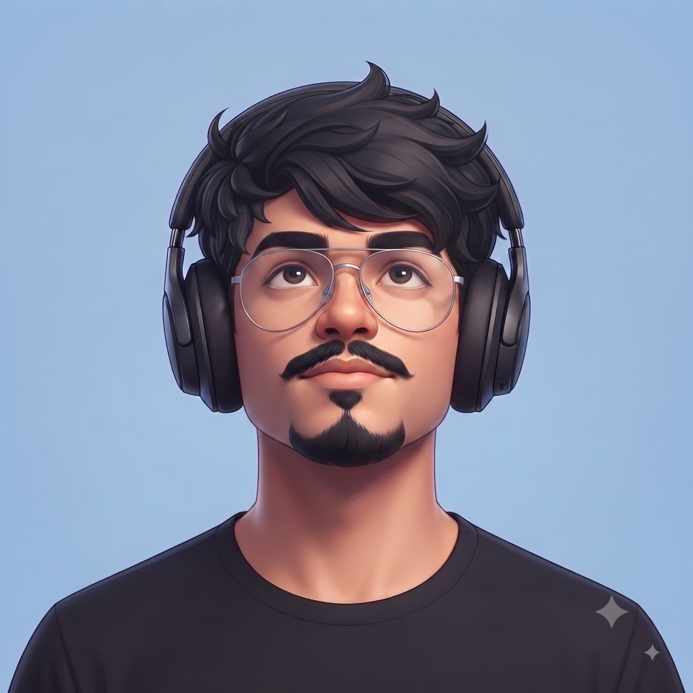
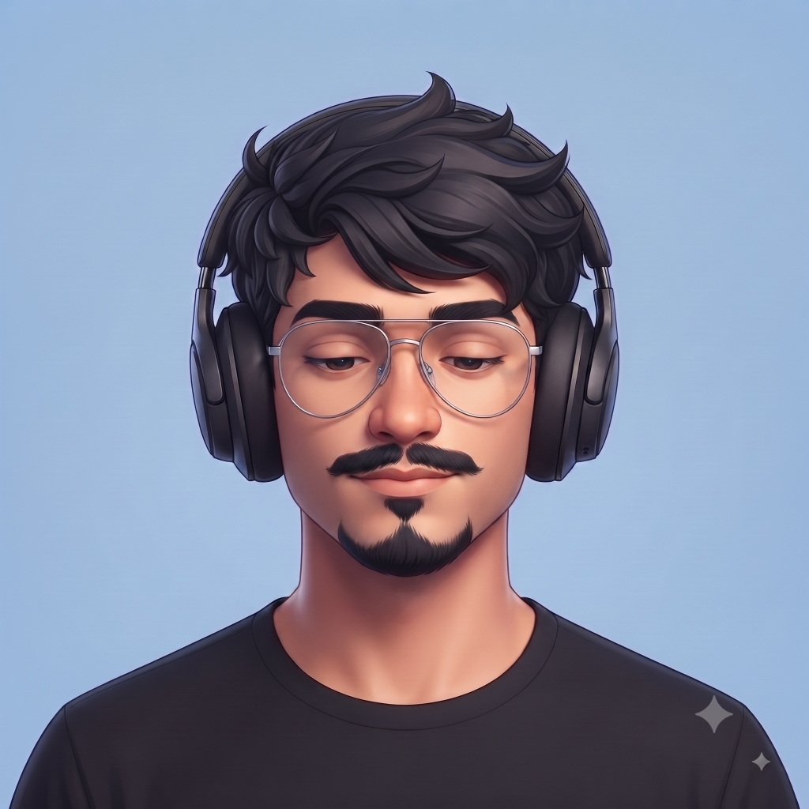
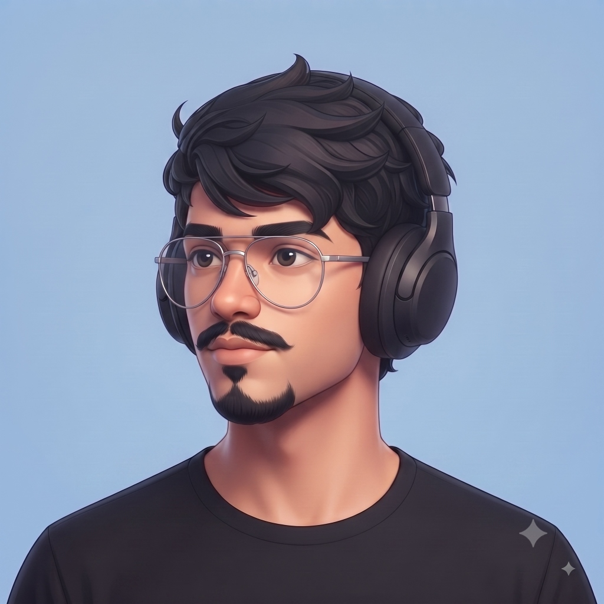
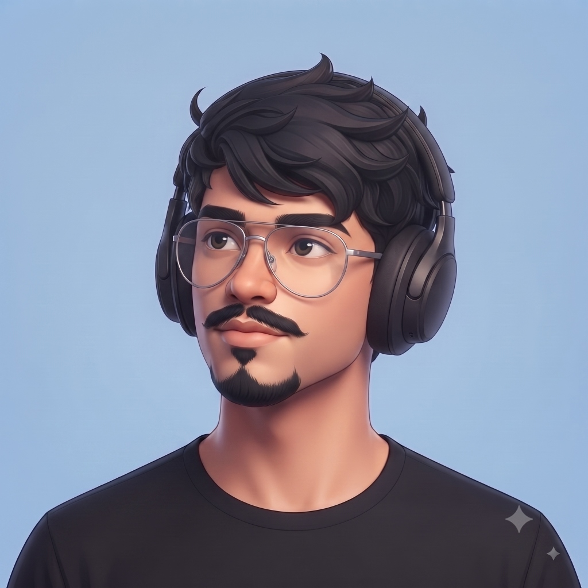
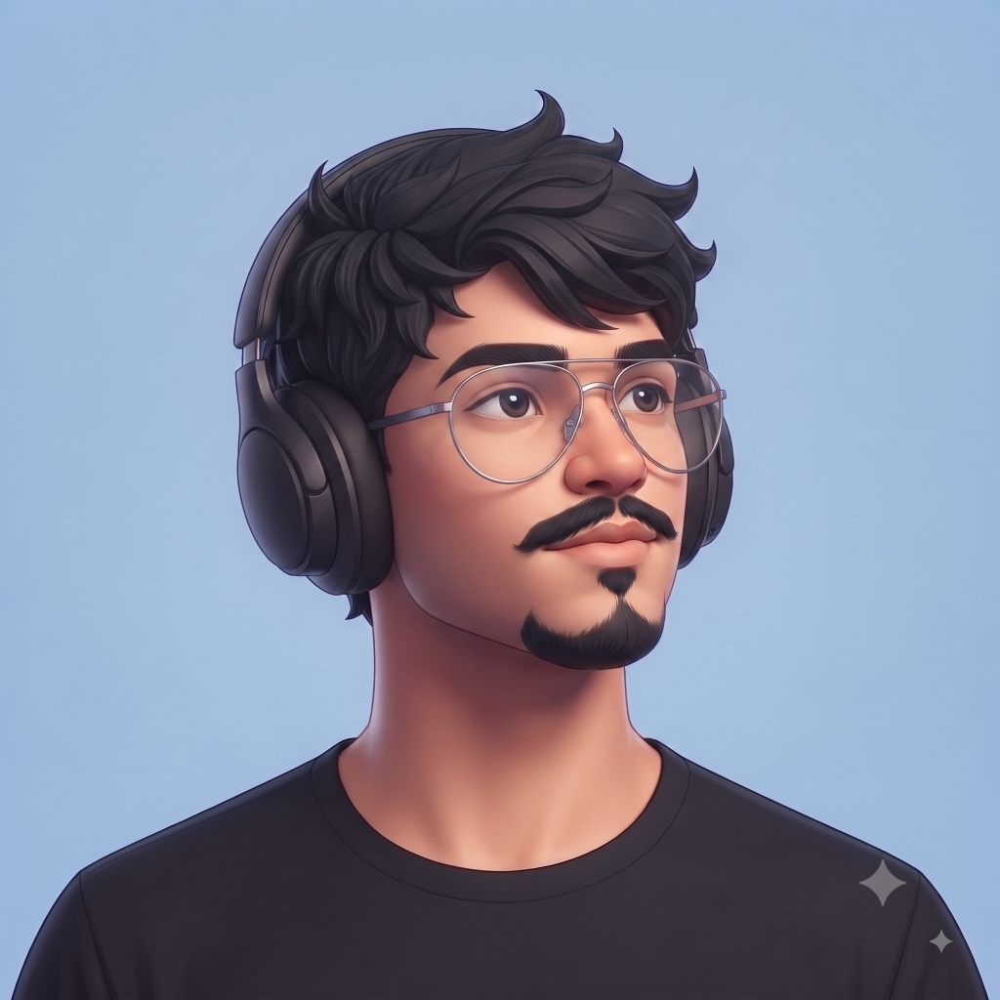
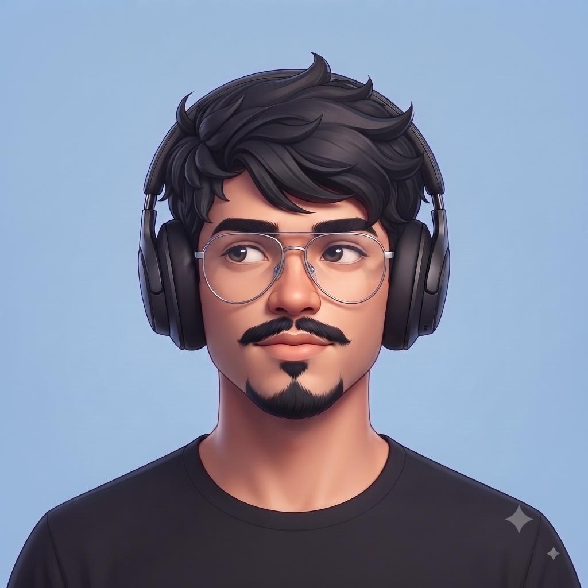
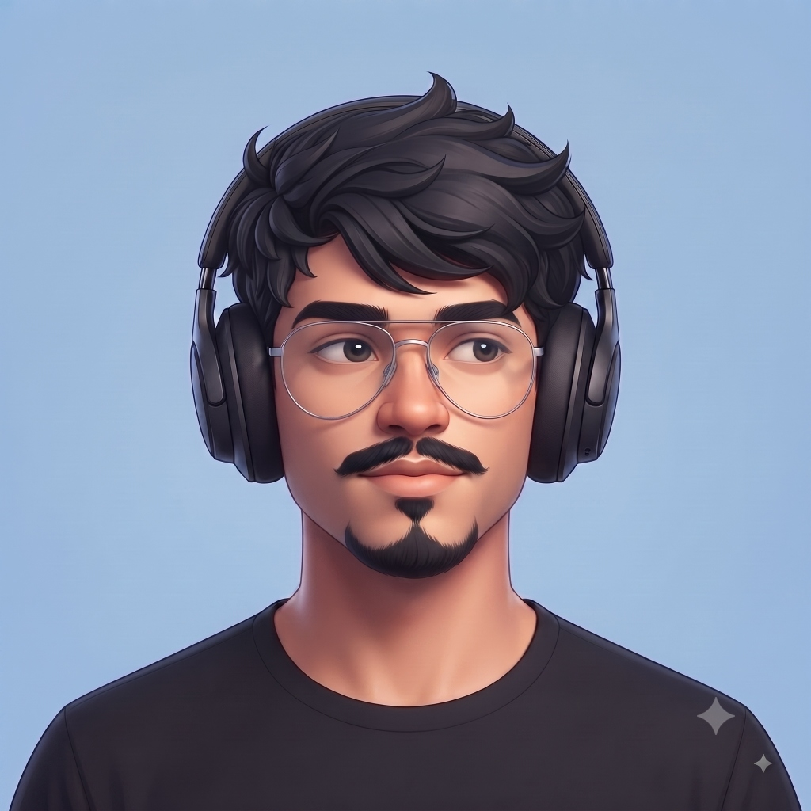

Sagar Mahajan
Agentic systems, LLM orchestration, and applied computer vision — with full-stack engineering as the delivery layer that turns those systems into shipped products.







Not just building AI systems — making them accountable.
I'm an AI/ML engineer focused on agentic systems, LLM orchestration, and applied computer vision — with full-stack engineering as the delivery layer that turns those systems into shipped products. Most of my recent work sits at the boundary between an autonomous agent and the real world it's allowed to act in: reviewing what an agent proposes before it runs, tracking what a model actually sees, and making sure the pipeline underneath stays honest at scale.
Four roles, one throughline: ship it, then prove it's safe.
Built Sentinel, a three-stage guardrail agent for LLM-powered coding assistants. Sentinel sits between an LLM agent and its execution environment, reviewing every proposed action before it runs — integrating with Claude Code, Cursor, and CodeX.
Automated web-based operations for internal platforms using Python & Flask, and ran performance testing that improved efficiency and software stability at an enterprise scale.
Developed cross-platform web and mobile applications using web technologies and Android frameworks, designing user-friendly, responsive interfaces in close collaboration with peers.
Developed full-stack web applications using React.js & Flask, and implemented SEO strategies that increased web traffic by 15%.
Four domains that compound into one practice.
Fourteen builds, from guardrail agents to edge-speed vision. Click any card for the full case study.
An agent that can act is only as trustworthy as the system watching it act. I don't ship autonomy — I ship autonomy with a witness: something that reviews, verifies, and can say no.
Verify before you trust
Sentinel and LATO both exist because "the model said so" isn't good enough. Every proposed action gets reviewed against real constraints before it executes.
Latency is a feature
A guardrail nobody can afford to run gets bypassed. Sub-5ms gateway checks and 35ms end-to-end vision pipelines aren't vanity metrics — they're what makes safety usable.
Ship the whole stack
A model is not a product. I build the FastAPI gateway, the RBAC layer, and the React surface around it — because the delivery layer is where trust is actually earned.
Open to conversations about agentic infrastructure, applied CV, or roles where shipping and safety aren't treated as trade-offs.